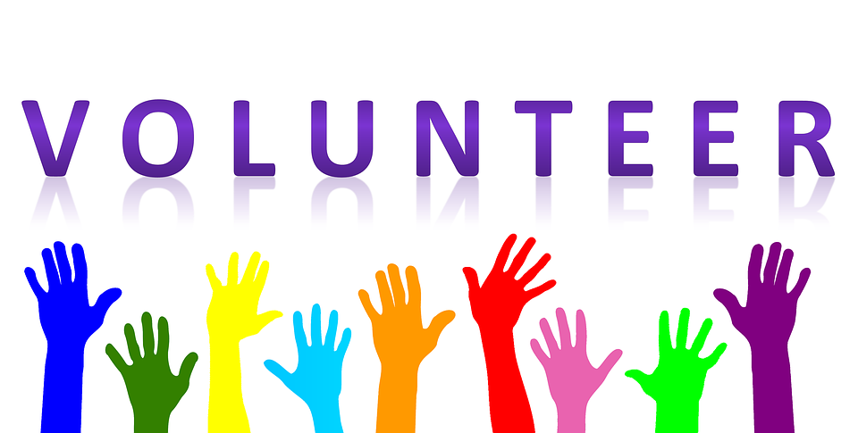
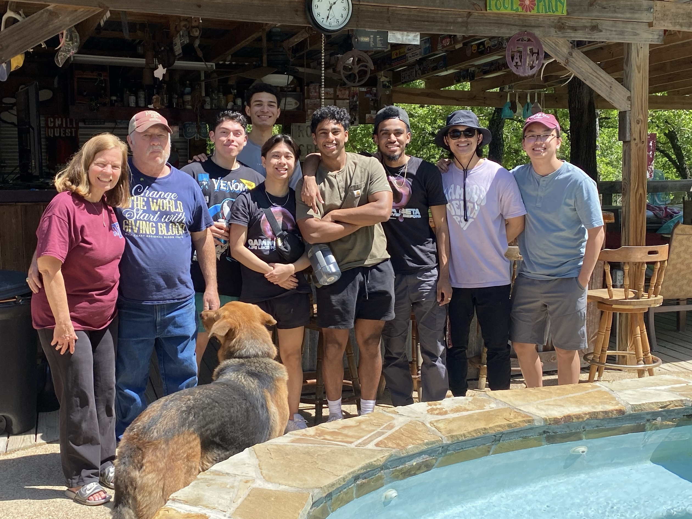

Volunteering is crucial because it helps make our neighborhoods and communities better.
There are many ways to give back to the community.
Some ways include...
Food Banks
Food banks give out food to the less fortunate.
They take donations and give out basic groceries to people in need.
In high school, I worked at the Second Mile foodbank in Houston.
We would bag up groceries and load them into people's car.
Marathons
Setting up 5Ks and marathons require alot of work and planning.
Volunteering at marathons helps the runners and the event planners.
From handing out water at stations to pre race set up, there is much to do!
They also give lots of free stuff!
Animal Shelters
If you love animals then this is a great opportunity to help them!
Animal shelters are great places to volunteer.
Some of the tasks include feeding them, taking them on walks.
It's also nice for the animals to be able to interact with new faces.
Cleanups
Pollution is a serious problem and our beautiful landmarks have lots of trash.
Cleanups are a great way to get involved and help make our world beautiful again
Some places that offer cleanup opportunities include beaches, parks, and highways.
You can even get involved here at A&M with street cleanups!